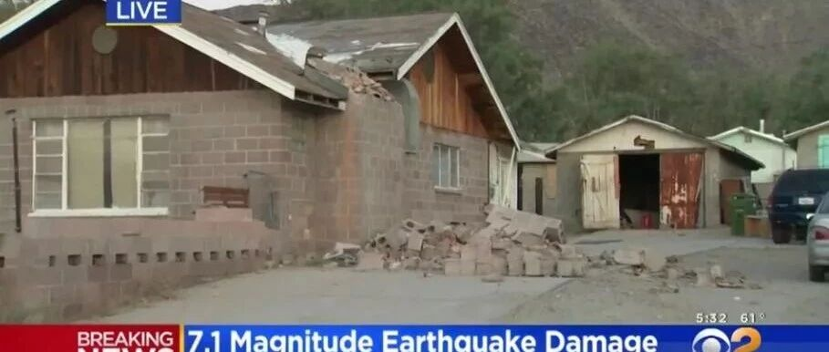

美国加州7.1级地震破坏力分析小结：分析结果、与实际震害对比及思考
自1994年北岭地震后，美国加州已经有25年没有经历过大地震的考验了。所以这次Ridgecrest 7.1级地震是一个非常重要的案例，这两天我们课题组也一直在密切跟踪分析本次地震的情况。先把一些初步结果向大家汇报一下：
1. 灾情简报及分析
这次加州地震震级达到了7.1级，震源深度只有17km。且震中距离2万多人口的Ridgecrest市只有十几公里（图1）。从常识来说，这次地震导致严重后果的可能性是很高的。

图1 震中位置和Ridgecrest市
（图片来源谷歌地图）
所以昨天中午收到加州发生7.1级地震的消息时，我的心情是紧张且焦虑的。于是，我们一边立刻启动RED-ACT评估系统开始分析灾情，一边密切关注美方的最新消息。
然而，一天多过去了，根据美方报道，到目前为止，尚未有人员在此次地震中遇难，建筑破坏的案例也很少（图2）。

(a) 烟囱破坏（图片来源CBS）

(b) 一些临时结构破坏（图片来源https://twitter.com/EytanWallace/status/1147586418249629697）
图2 7月5日Ridgecrest 7.1级地震造成的一些工程破坏
考虑到2018年11月30日阿拉斯加7.0级地震（震中距离阿拉斯加最大城市安克雷奇也只有十几公里）也是零死亡。也就是说，美国近期已经成功实现了两次7级以上地震零死亡，我们应该客观承认美国地震工程界取得的重要成就。
当然，我们一直在强调：地震的震级和地震引起的地面运动强度之间是存在巨大不确定性的，简单从震级来分析工程破坏风险并不够完善。近期美国两次7级以上地震人员零死亡，确实很了不起。但是这里面既有美国搞好工程抗震，避免了建筑物倒塌的必然因素，也有一些偶然因素，即虽然这两次地震的震级都很大，震源深度也不是很深，但是引起的地面运动强度并没有那么厉害。图3所示是将两次美国地震记录到的震中附近最强地面运动，与2013芦山7.0级地震和2014鲁甸6.5级地震记录到的最强地面运动的对比。

图3 四次地震最强地面运动反应谱对比
从图3对比可以清晰看出，这两次美国地震引起的地面运动反应谱实际上并不是非常强烈，比鲁甸地震还差不少。所以，简单从震级来判断地面运动强度进而预估灾情，是存在巨大的不确定性的。
那读者可能会问，这几个7级左右地震看着都差不多大，那会不会鲁甸地震是个特例呢？再给大家一个例子，图4给出了2016年日本熊本7.3级地震记录到的最强反应谱。从图中不难看出，美国建筑这两年算是通过了“中级”难度的考验，还没有达到鲁甸这种“高级”难度，更距离熊本这样的“地狱”难度差得远。

图4 鲁甸、阿拉斯加、Ridgecrest与熊本地震对比
进一步，我们考察一下美国当地建筑抗震设防水平。图5所示为美国当地2500年超越概率的罕遇地震（Maximum Considered Earthquake，MCE）对应的反应谱（对应的PGA为0.582g）。

图5 当地设计MCE反应谱与实测地面运动对比（C类场地）
从图5不难看出，本次地震引起的地面运动并未超过当地设防罕遇地震水平，在0.5s以下的短周期段（也是当地单层住宅的主要周期段），比罕遇地震反应谱还差不少。所以，对本次美国7.1级地震的分析，基本上可以给出以下的结论：
(1) 地面运动强度未出现严重异常
(2) 抗震设防标准合理
(3) 建筑质量达到抗震标准要求
当然，除了第一条是老天爷照顾以外，其他两条反映出美国地震科研和工程界确实做得很不错。当然，由于Ridgecrest市是一个二战后兴起的新兴城镇，没有什么历史建筑，所以建筑抗震能力基本有所保证。美国人自己也说，如果这次地震发生在其他一些城市，那么结果可能就没那么好了。
2 城市抗震弹塑性分析及RED-ACT的结果
我们基于城市抗震弹塑性分析研发的RED-ACT系统（Real-time Earthquake Damage Assessment using City-scale Time-history Analysis）的主要目的是为了满足我国抗震救灾的应急需求。考虑到我国人口密集区地震频率相对较低，强震台网建设也还需要进一步加强。为了有更多的机会去检验、改进RED-ACT系统，我们也将其用于其他国家的震害分析。不过由于力量有限，RED-ACT的美国版本还很简陋。不过，即便是这样一个简陋的RED-ACT系统，依然得到了一些有意思的结论。
北京时间7月6日上午11点20分，地震一发生我们就开始准备用RED-ACT做分析。但是，美方虽然在当地有非常密集且运行良好的强震台网，但强震动数据处理速度很慢。直到昨天晚上12点都没有公布近场强震记录数据。我们无奈之下只好去Caltech的网站上直接下载台站的原始数据并进行分析（由于不了解台站的具体信息，数据处理得比较粗糙）。终于在晚上10点30分给出了震中附近建筑破坏分析图（图6）。基本可以给出结论：地面运动引起的建筑破坏最多到中度破坏水平。应该没什么大事。

图6 RED-ACT在北京时间7月6日22:30给出的震中附近建筑破坏分析图
（参阅：RED-ACT: 7月6日美国加州7.1级地震破坏力分析）
7月7日早上，美方终于正式公布了其近场台站处理后的地面运动记录。经过滤波、纠偏等处理后，地震动的破坏力又有所降低，RED-ACT分析得到的建筑破坏分析结果如图7所示。实际上如果我们从一开始就不依赖美方处理强震记录而是直接从台站获取数据，我们可以在地震后马上给出类似的震害分布结果。

图7 RED-ACT在北京时间7月7日7:00给出的震中附近建筑破坏分析图
这里又有两个有趣的现象：
1：如果根据PGA做分析，则本次地震震中附近记录到的最大PGA为0.569g，非常接近罕遇地震MCE的0.582g。也就是说，这些建筑应该算是经历了一次罕遇地震MCE的打击，应该破坏得比较严重了。
2：如果根据反应谱做分析，图5中实测地震的反应谱和罕遇地震MCE的反应谱也差不多，照理说建筑也应该遭到了比较大的破坏。
但是实际上由于当地建筑大部分为单层建筑，周期都比较短，恰好位于本次地震中设计地震作用和实际地震作用安全储备最大的那个区间，所以RED-ACT评估建筑震害整体而言比较轻。这与美方目前报道的结果整体比较吻合。其关键原因是RED-ACT系统是基于实测地震记录加抗震弹塑性时程分析的，可以充分考虑实际地震动及实际建筑抗震能力的多方面因素。
当然，现阶段RED-ACT系统还只能分析地面运动加速度引起的建筑破坏，这次Ridgecrest地震还有很多地表变形开裂等震害，导致了一些建筑的破坏，这个就是RED-ACT系统现在还处理不了的了。
需要说明的是，基于实测地震动和城市抗震弹塑性分析评估震害还是一个新生事物。由于我们课题组力量有限，所以在目标区域建筑模型、地震动的获取和处理等方面很多工作还非常简陋，欢迎国内外同行共同合作，研究发展该项技术。
最后还想说一句，什么时候我们能做到7级地震不死人，虽千难万难，亦无憾矣！
感谢赵鹏举、郑哲协助整理资料。
相关文章
---End---
相关研究
长按识别二维码，关注我们的科研动态